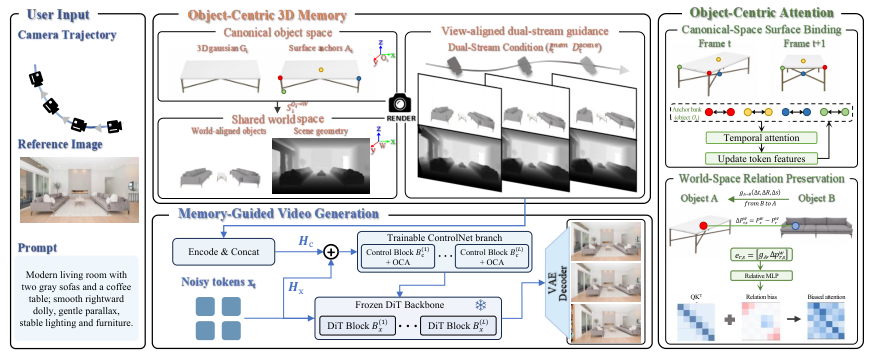

Paper Analysis
01 · Generation Task and Persistent Object State
Totem 输入一张参考图、文字提示和预设相机轨迹，输出沿这些视点生成的视频。目标是相机转动或走远后，同一个对象的外观、表面结构和对象间布局保持一致。这里的三维状态主要约束生成，不是从真实视频恢复精确动态场景的重建评测。
普通图像到视频模型可能在每个视点重新猜测对象细节。作者为选中的刚性对象建立可渲染三维表示，让不同帧访问同一个对象状态。canonical space 是对象自身坐标系，world space 是共同场景坐标系，二者由含尺度的 Sim(3) 连接。
Paper Analysis
02 · Constructing the Memory Before Denoising
Qwen3.5-122B-A10B 识别主要刚性对象并给出框，SAM 3 提供 mask，VGGT-Omega 从参考图预测场景 pointmap。SAM3D 分别重建对象的 canonical Gaussian。注意对象完整三维形状由单图先验补全，背面并非直接观测真值。
对象与场景首先通过像素对应的三维点做 RANSAC–Umeyama 对齐，约束尺度范围。主分支不可靠时，使用 FPFH 特征匹配作为备用初始化；两者都失败则丢弃对象候选。之后只用参考视图支持的可见表面精修旋转和平移，锁定尺度。
这一步避免把单图补全的背面作为可靠对齐证据。被拒绝的对象区域仍保留在场景几何中，只有成功接受的对象 mask 才从背景点图中移除，避免条件输入无故留下空洞。
Paper Analysis
03 · Reading the Original Pipeline

Zichen Wan et al. · Original figure, unmodified · CC BY 4.0 · Paper & Caption ↗
沿 Figure 2 从左到右，先将对象放到同一世界坐标，按目标相机逐帧渲染对象 RGB 与场景深度。共享深度遮挡判断过滤被背景挡住的对象像素，并保存每个像素的对象 ID 与 canonical 坐标。
对象 RGB 与深度分别经冻结 video VAE 编码，mask 池化到 latent 分辨率，再经各自投影后合成控制 token。深度在有效像素上做 log-normalization。相机用 Plücker rays 编码，ControlNet 分支通过零初始化投影给冻结 DiT 注入逐层残差。
对象渲染提供可见表面的外观依据，场景深度补充背景与遮挡结构。两种条件各有职责；不能把这个 dual-stream 结构自动当作对重建任务最优的设计。
Paper Analysis
04 · Canonical Anchors as Surface Addresses
每个对象 memory 保存 Gaussian G_i、表面 anchors A_i 和对象到世界变换 S_i。anchors 用最远点采样获得，它们是表面地址；网络特征才是这些地址上可被注意力更新的状态。
视频 token 先按覆盖像素判定属于哪个对象，混合或证据弱的 token 被排除。对可靠 token，将其 canonical 坐标与该对象 anchors 的距离做 softmax，得到归属权重，再按权重汇聚帧内特征。
下式中 x_n 是 token 表面坐标，a_m 是 anchor，τ 控制匹配软硬程度。相同 anchor 在不同帧的特征进入注意力交互，再写回关联 token。教学解释：即使同一表面在图像中从左侧移到右侧，只要 canonical 地址一致，仍可共享外观证据。
M_i = (G_i, A_i, S_i) w_nm = softmax_m(-||x_n - a_m||² / τ) h_tm = Σ_n w_nm z_tn / Σ_n w_nm
Paper Analysis
05 · Preserving Relations in World Space
仅保证单个对象表面一致仍可能让两个对象的相对位置漂移。作者计算 S_i⁻¹S_j，将源对象 j 表达到查询对象 i 的坐标系；把平移按查询对象尺度归一化，旋转用连续 6D 表示，相对尺度取对数。
同帧跨对象 token 的注意力分数在 QK 相似度之外增加几何偏置，偏置由对象相对变换与两表面点的世界位移经 MLP 得到。λ 是可学习的层/头缩放。这种关系是有方向的，交换 i、j 后通常不同。
个人解释：canonical 约束回答“是不是同一块表面”，world 约束回答“不同对象应怎样相对放置”。它们都依赖初始对齐可靠；错误尺度或错分实例可能把错误关系稳定地传给生成器。
attention_logit(r,s) = q_rᵀ k_s / √d + λ · MLP(relative_transform, p_s - p_r)
Paper Analysis
06 · Training, Inference, and Memory Growth
视频底座是冻结的 Wan2.2-I2V-A14B。第一阶段训练相机和双流控制路径，第二阶段冻结相机分支并启用对象注意力模块。RealEstate10K 与 DL3DV 各约 40K 片段，合计约 80K，采样 15 fps、每段 81 帧、裁剪到 720p。
推理先建对象 memory，然后对给定轨迹生成控制条件并去噪。长视频应用在片段末帧重建对象并加入 memory，为下一片段提供依据。后续片段的“观测”来自生成结果，所以错误可能反馈到记忆；不能把它等同于传感器新观测带来的真实证据。
这不是固定预算的逐帧 online reconstruction。论文没有在本文列出的实验中给出无限序列下总 memory 恒定的证明，也未明确展示完整系统包含对象重建的实时吞吐量。HTML 附录的参数表存在转换缺失，本笔记不填造未核实的训练步数或延迟。
Paper Analysis
07 · Evidence from Controlled Comparisons
WorldScore 使用 2,000 个静态测试例，每例包含输入图和轨迹。Totem 总分 86.43，UniWorld-View 为 85.53；但 object control 为 88.24 对 88.98，content alignment 为 84.52 对 86.61，并非所有指标最佳。
ConsIDVid-Bench 公共子集有 370 视频。Totem 的 Object Similarity 73.2 高于 WorldStereo 的 71.4；Chamfer Distance 从 0.1053 降至 0.0976，MEt3R 从 0.0964 降至 0.0818。这些是该生成评测协议下的对象一致性结果，不应与真实扫描上的重建误差横向拼表。
更直接的消融是在作者构建的 400 例 OOD 集合中比较相机分支、点云条件、双流条件及加入 OCA。下表保留三个核心指标。完整模型改善明显，但该表把 canonical 与 world 两个 OCA 一起加入，不能据此分别量化每个子模块贡献。
| Condition | Object Similarity ↑ | Chamfer Distance ↓ | MEt3R ↓ |
|---|---|---|---|
| Camera only | 48.5 | 0.289 | 0.361 |
| Projected point cloud | 53.7 | 0.234 | 0.284 |
| Dual-stream guidance | 58.6 | 0.173 | 0.208 |
| Dual-stream + OCA | 65.3 | 0.124 | 0.138 |
Paper Analysis
08 · What Transfers to Reconstruction Research
Totem 的 VLM 用于前处理选对象，不是作为语义教师直接训练 memory 写入。对象索引、表面坐标和相对变换进一步控制 attention，这说明“对象组织”可以具体改变信息交互，而不只是保存一个类别标签。
对 LingBot-Map 的潜在借鉴是稳定表面地址与几何关系偏置：当历史与当前 token 对应同一对象表面时，可按几何证据建立稀疏读取。这里是个人设计分析，论文没有给出将 Totem 接入 LingBot-Map 的结果。
迁移的难点包括流式坐标系漂移、对象身份切换、可动对象、固定容量回收。Totem 通过预建刚性对象支持生成，在真实在线重建中则要允许旧地址和几何被修正。值得借鉴的是几何约束如何进入读取，不能照搬单图对象补全并当作测量真值。
Discussion
Reading Questions
Is the memory built from observed 3D ground truth?
不是。对象形状来自单图重建先验，场景点图也是预测；可见表面用于对齐验证，补全背面仍存在不确定性。
What makes the attention object-aware?
对象 ID 限定表面绑定，canonical 坐标确定 anchor 权重，相对对象变换进入跨对象 attention bias。
Does the VLM learn the write policy?
论文使用 VLM 选取对象和框，没有展示 VLM 监督一个可学习的长期淘汰/写入策略。
References
One original figure is reproduced under CC BY 4.0, with attribution. No modifications.
Verified on 2026-10-19. Paper results refer to the linked versions. Repository references were checked on this date.